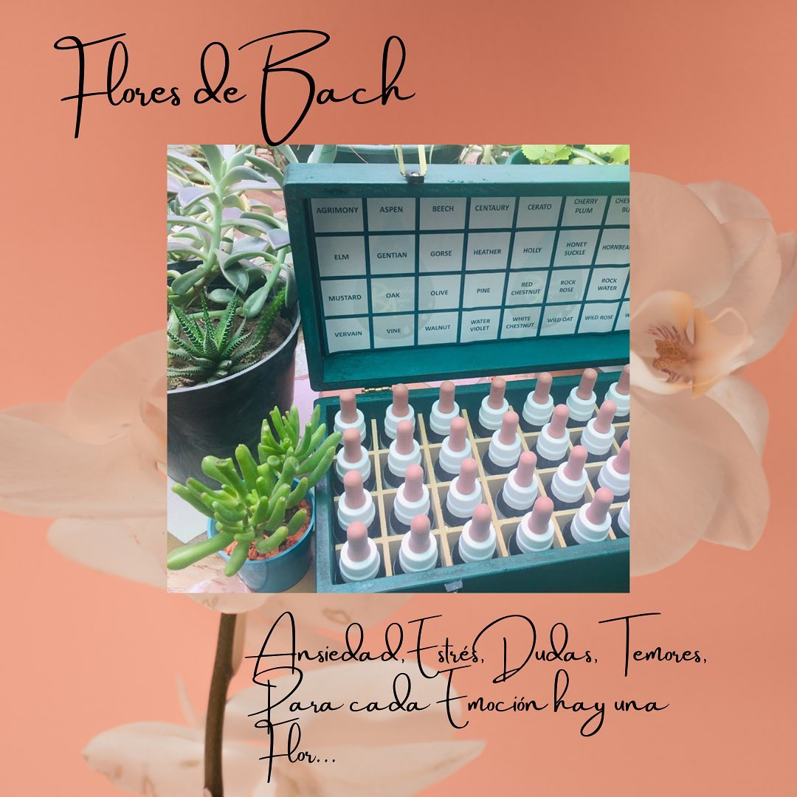
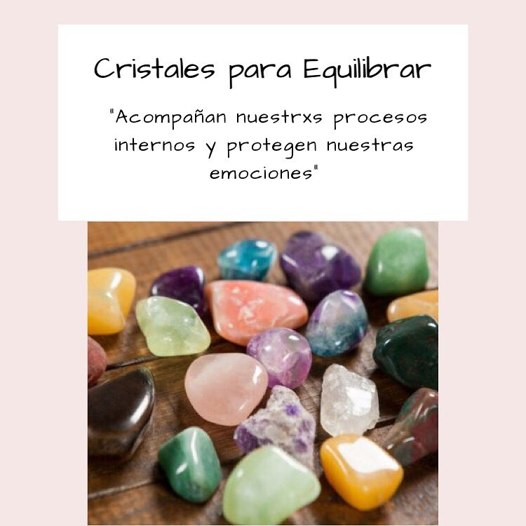

Terapia AstroFloral
La terapia floral consiste en identificar las emociones que afectan al ser humano para, así, tratarle con las esencias más adecuadas. Esto implica que la esencia de cada flor, escogida minuciosamente, puede devolvernos el equilibrio emocional
Reiki
es un tipo de terapia energética en la que la “energía vital universal” se canaliza hacia el paciente a través del tacto y la intención positiva. Reiki se originó de los monjes budistas. “Rei” significa “espíritu universal” y “ki” significa “energía vital”.
Aromaterapia
La aromaterapia es el uso de los aceites esenciales de las plantas para mejorar el equilibrio de la mente, el cuerpo y el espíritu. La usan los pacientes de cáncer para mejorar la calidad de vida y reducir la tensión, la ansiedad, el dolor, las náuseas y los vómitos que causa el cáncer y su tratamiento.
Gemoterapia
La gemoterapia es una disciplina que aplica terapias con piedras preciosas y cristales, caracterizadas por unas propiedades determinadas. La finalidad de esta práctica es favorecer el bienestar y relajar tanto el cuerpo como la mente, aunque profundizaremos en sus múltiples beneficios más adelante.
